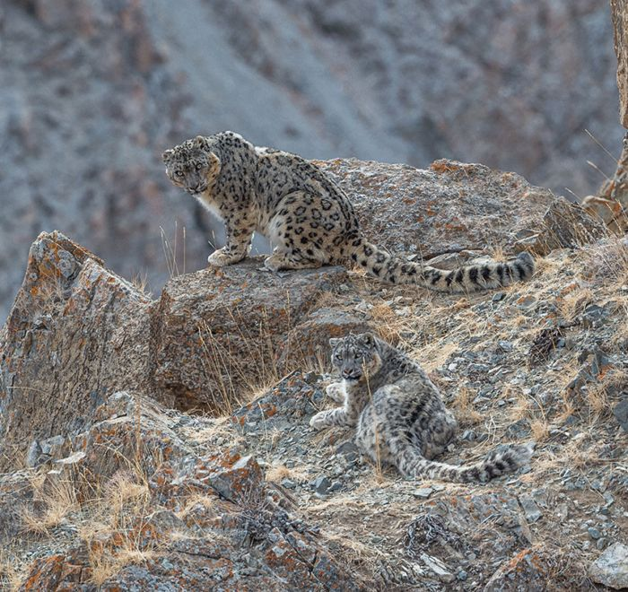
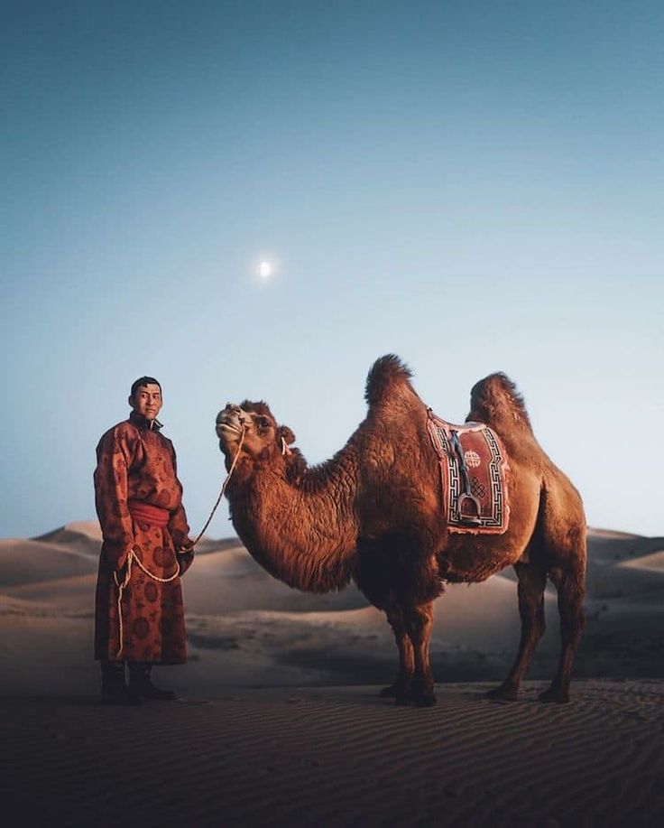

Wildlife Adventures
1. According to Snow leopard Mongolia association Mongolia is home to one of the populations of snow leopards, primarily found in the rugged Altai Mountains. These elusive and endangered cats thrive in the harsh, rocky terrain, blending seamlessly with their surroundings. Conservation efforts in Mongolia, including protected areas and community initiatives, play a vital role in preserving their habitat and reducing human-wildlife conflict.
2. Mongolia's two-humped Bactrian camels are a vital part of life in the Gobi Desert, known for their endurance in harsh conditions. These sturdy animals are used for transportation , milk and wool, supporting the livelihoods of nomadic herders. Their ability to withstand extreme temperatures and travel long distances makes them perfectly adapted to Mongolia;s arid landscapes.
